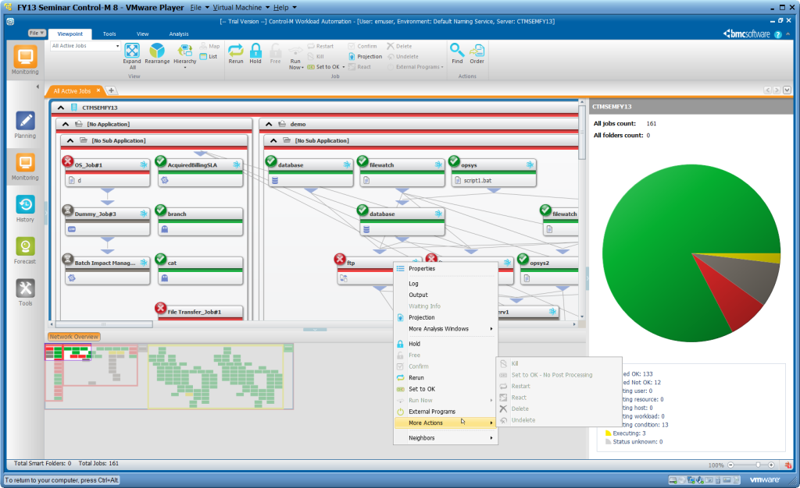
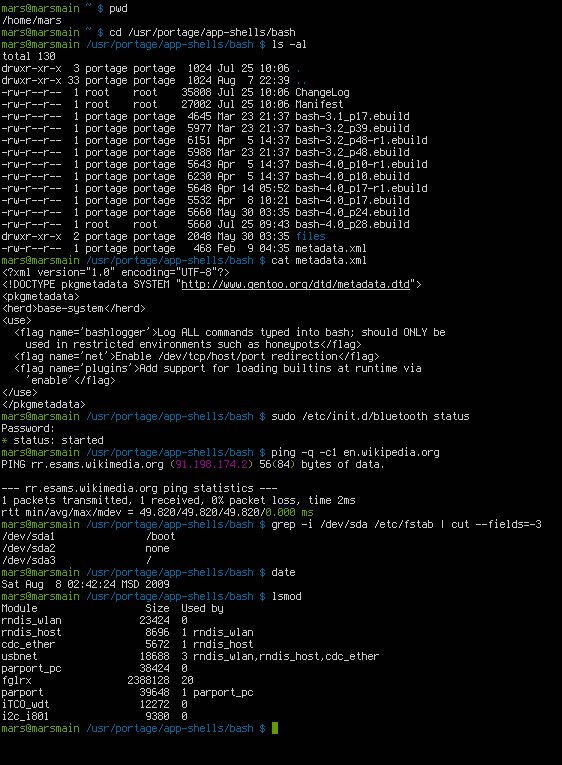

Soporte Operativo
Control de Servicios Regulatorios
Seguimiento de mallas críticas, procesamiento y análisis de datos en la división de banca corporativa internacional de Santander Digital Services (SDS) a través de Alenia.
// Ponente
Juan Carlos Martos
// Escuela
42 Málaga (F. Telefónica)
// Empresa
Alenia
// Cliente Final
Santander CIB
¿Qué es Santander SCIB?
Banca corporativa
Servicios premium e inversión a escala de grandes multinacionales y fondos mundiales.
Mercados financieros
Intercambio internacional de capitales, divisas y activos las 24 horas.
Procesamiento
Tratamiento y almacenamiento masivo de datos transaccionales heterogéneos.
Servicios globales
Flujos de datos que deben operar sin fallos bajo estrictos acuerdos legales.
Mi equipo en Santander
Nomenclatura Oficial del Equipo:
Soporte técnico de primer nivel en la rama de "Servicios Gestionados Tecnológicos (SGT)", orientados al Control de Riesgos (CR) y flujos regulatorios de Santander CIB.
Desglose de Funciones:
Responsabilidades y Trabajo Diario
// Pilares del Equipo
Supervisión en tiempo real de mallas automatizadas de procesos críticos.
Garantizar la entrega íntegra de reportes normativos.
Clasificación, diagnóstico y seguimiento de alertas de producción.
Canalizar rápidamente errores complejos hacia L2 y L3.
// Mi Día a Día
Supervisión en ventana crítica
Control estricto de las franjas horarias clave en las que viaja la información financiera.
Detección y Análisis preventivo
Análisis detallado de logs para evitar bloqueos e interrupciones en la producción.
Validación y Runbooks
Redacción y mejora de manuales de soporte técnico para resolver futuras incidencias velozmente.
Tecnologías Utilizadas

BMC Control-M
Gestión y monitoreo de mallas de procesos críticos (*batch jobs*) bancarios y flujos automáticos de datos.

Linux & Bash
Diagnóstico ágil en servidores, análisis profundo de logs de mallas críticas mediante terminal Bash.
Apps Corporativas
Herramientas bancarias de Santander para monitorizar flujos regulatorios de activos monetarios y transacciones.
¡Muchas gracias!
Esta primera experiencia profesional como consultor tecnológico en Alenia Consulting, y el entorno corporativo internacional de Santander CIB me ha permitido evolucionar como analista de datos técnicos en producción crítica diaria.
Tambien cabe mencionar como clave la metodología de 42 Málaga, demostrando que la templanza, la resiliencia y la asimilación ágil de stack complejos son aptitudes óptimas para trabajar en una gran empresa.